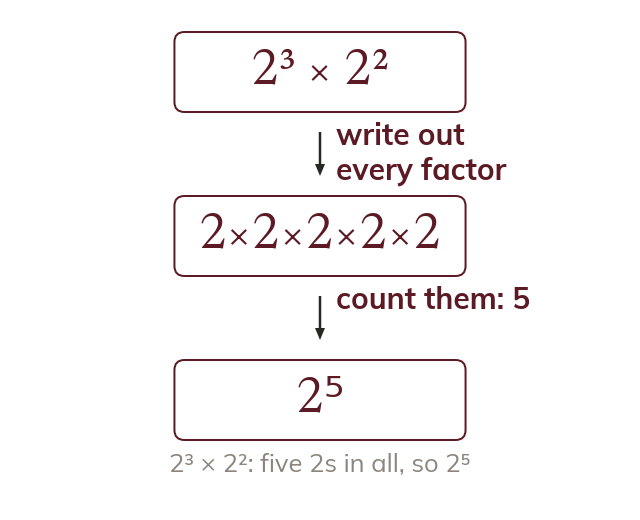

Multiplying and dividing powers
An index counts how many times the base is a factor. Multiplying powers of the same base adds the indices. Dividing subtracts them.
An index says how many times the base is used as a factor:
Multiplying powers of the SAME base adds the indices: since it's really just counting up all the factors together. Dividing subtracts them: since matching factors cancel.
Multiplying powers of the SAME base adds the indices: since it's really just counting up all the factors together. Dividing subtracts them: since matching factors cancel.